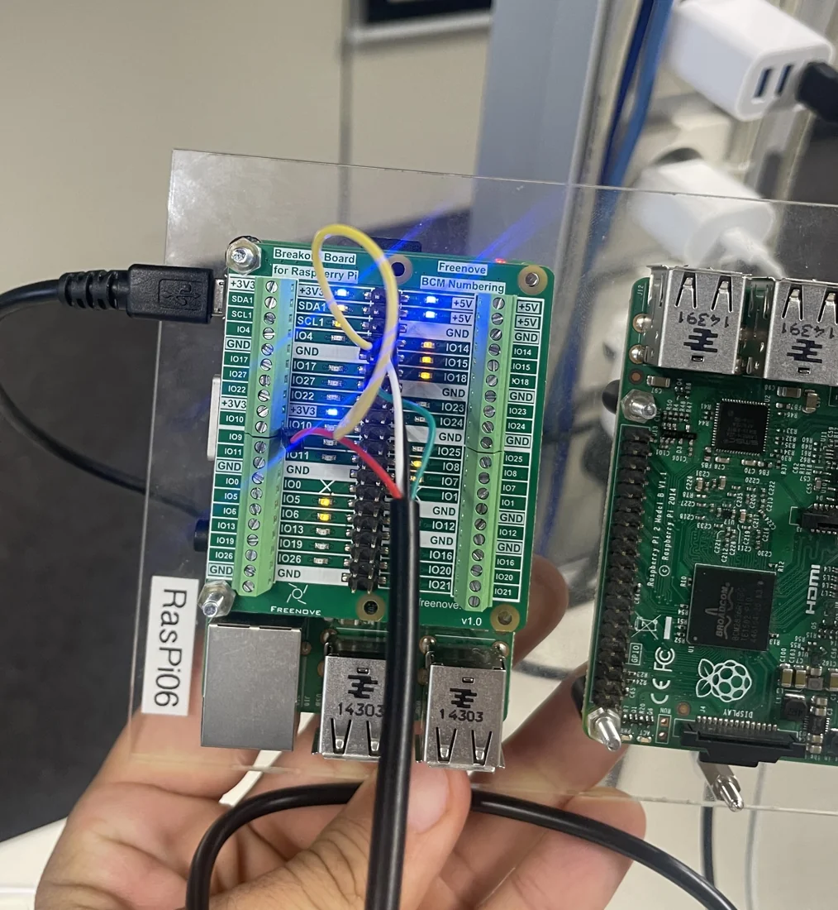
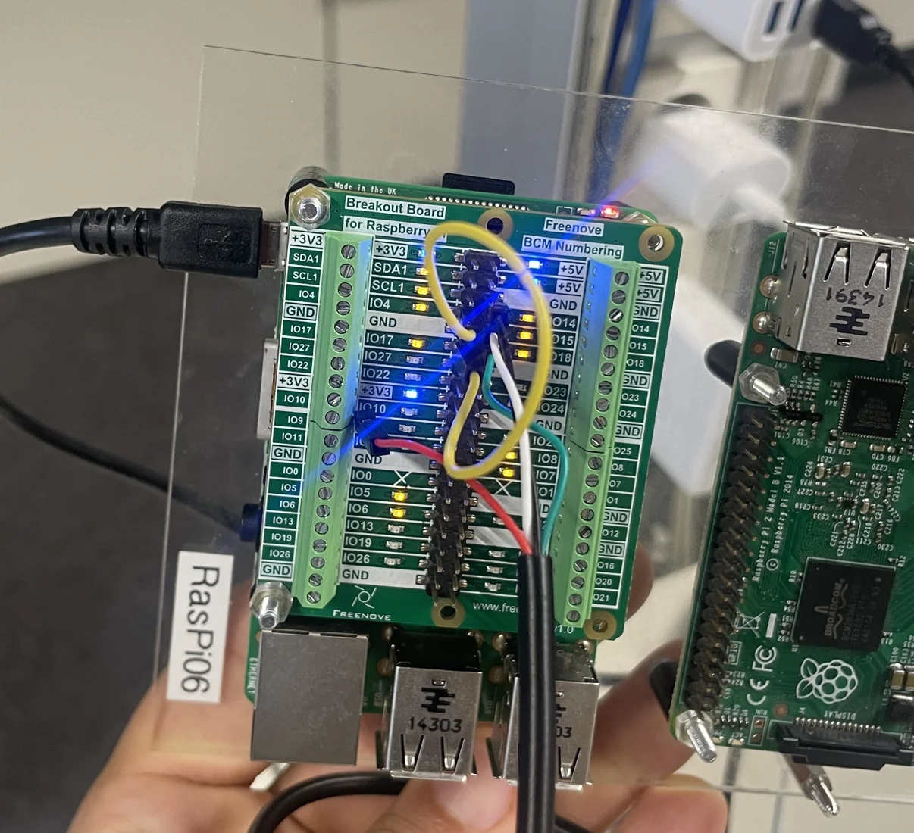

RTEMS: Echtzeitfähige Embedded-Steuerung
Vorhersagbares Softwareverhalten auf realer Hardware.

RTEMS / AUF HARDWARE GETESTETDie Herausforderung
Echtzeitanwendungen müssen auf externe Ereignisse reagieren und nebenläufige Aufgaben koordinieren. Dabei gilt es, Konflikte beim Zugriff auf gemeinsame Ressourcen und die Auswirkungen zeitkritischer Abläufe zu begrenzen.
Der Ansatz
Ich implementierte die GPIO-Steuerung in C mit POSIX-Threads, Interrupts, Mutexen und Semaphoren. Zusätzlich untersuchte ich das RTEMS-Scheduling mithilfe von QEMU, GDB und Capture-Engine-Traces, einschließlich Prioritätsinversion und Priority Inheritance.
- Periodisches Schalten von GPIO-Ausgängen mit POSIX-Threads
- Interrupt-gesteuerte Verarbeitung von Ein- und Ausgaben
- Semaphore und Mutexe zur Koordination gemeinsam genutzter Zustände
- Gantt-, Sequenz- und Zustandsdiagramme zur Thread- und Scheduling-Analyse
Das Ergebnis
Die ursprünglichen GPIO-Versuche auf dem Gerät, Terminalbeobachtungen und die Scheduling-Analyse wurden dokumentiert. Der Quellcode wurde anschließend für die öffentliche Darstellung korrigiert, jedoch nicht erneut unabhängig auf der Hardware getestet.
Hardwareversuche und eine Analyse des Echtzeit-Schedulings.
Einblicke in das Projekt

Das Repository unterscheidet zwischen der ursprünglich auf Hardware getesteten Abgabe und dem überarbeiteten Quellcode, der nicht erneut getestet wurde.